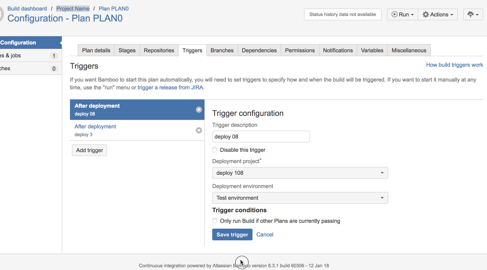

Eddie Webb
Proven Software Platform Engineer with experience leveraging agile, DevOps, and CI/CD to manage large scale distributed platforms both on prem and in public cloud.

Experience
Director, Enterprise Software Delivery
Led in development and oftware delivery and enterprise cloud adoption strategy. Collaborating across IT functions (security, compliance, networking, etc) to expand automation and self-service to reduce time for new applications from weeks to days.
Manager, Enterprise Software Developer
Led team delivering Liberty Mutual's first PaaS, modernizing software delivery. Accelerated tge adoption of cloud delivery and deployment platforms by 800%.
Principal Developer
Senior Developer
Collaboratively administrate empowered markets via plug-and-play networks. Dynamically procrastinate B2C users after installed base benefits. Dramatically visualize customer directed convergence without revolutionary ROI.
Education
Rochester Institute of Technology
Clinton Community College
Skills
Projects
Docker image for Bitbucket CI/CD Pipelines "shipit"
Provides required dependencies and additional utilities to simplify and codify the process of building, testing and delivering Atlassian plugins all the way to the live marketplace.- Executes integration/AUT level tests against all stated compatible versions for the product
- Uploads generated artifact to Atlassian marketplace
- Provides corresponding metadata indicating version, release notes, and compatibility
Happy Hour Command for Slack
Queries Google for local establishments meeting specified criteria randomly selecting a match based on reviews and distance. Technology: Python, AWS Lambdas, AWS KMS, SlackAtlassian Marketplace Plugins
Multiple plugins used by thousands of teams that provide enhanced functionality of Atlassian’s core products (primarily JIRA and Bamboo) to enrich CI/CD capabilities, DevOps automation, or productivity. Functionality spans user interface, web services and persistence. Html, JS, Spring and REST knowledge applied. Fun Fact: 1,500+ Active installations across large and small companies. Technology: Java, Spring, REST APIs, Javascript, Atlassian Developer Ecosystem (Bamboo, JIRA, Bitbucket, Confluence)Open Source Contributions
Aside from my various Atlassian plugins and learning repositories being licensed in the open, I have contributed to a handful of projects maintained by others. Successful PRs require committers to understand community guidelines/standards, communicate clearly, and work well with people you've had no previous relationship with.Atlassian Deployment Triggers
Addressed pretty significant performance issue for large deployment. Elimination of massive backend query, using asynchronous call against index reduced page load from from 2+ minutes to nearly instant, with incredible responsive search.
